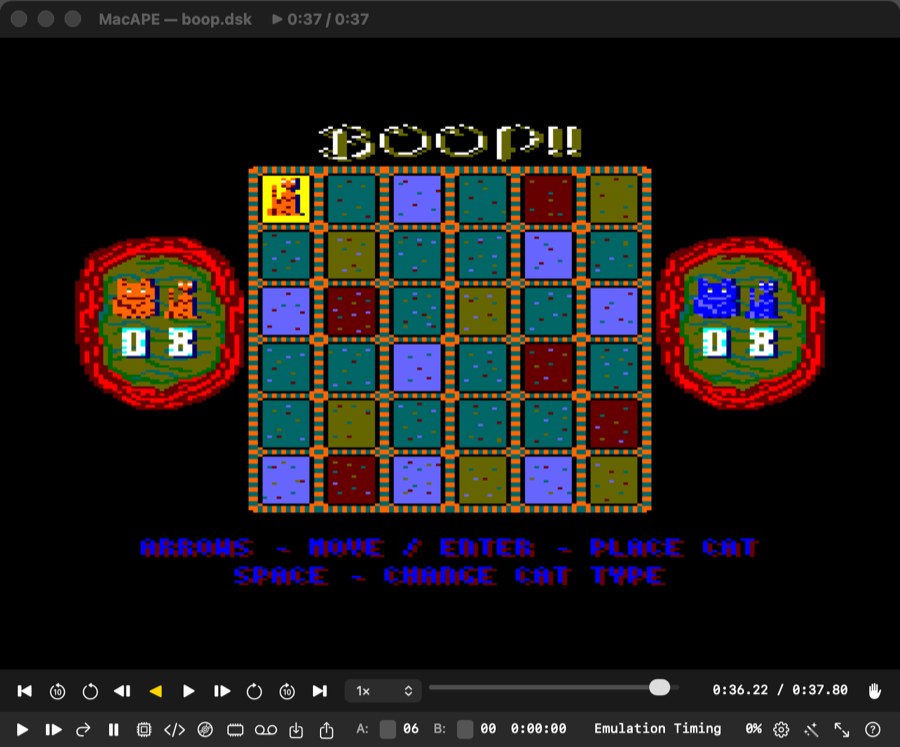

Grabar y reproducir
Graba una partida y reprodúcela como un vídeo: avanza, rebobina, salta a cualquier instante y para el depurador donde quieras, incluso yendo hacia atrás en la ejecución del Z80.
Qué es una sesión
Una sesión (.cpcrec) no es un vídeo: guarda el estado exacto de la máquina al empezar y todo lo que hiciste (teclas, joystick, ratón AMX, auto-type), con la hora exacta en que lo hiciste. Al reproducirla, el emulador vuelve a ejecutar la partida y obtiene el mismo resultado, instrucción a instrucción. Por eso:
- ocupa pocos KB por minuto de juego;
- puedes parar en cualquier instrucción y ver registros y memoria de ese momento;
- puedes ir hacia atrás con la depuración inversa.

Grabar
- Deja la máquina como quieras que empiece la grabación (disco insertado, juego cargado o en el menú).
- File → Record Session. El título de la ventana muestra
● REC 0:12. - Juega.
- Vuelve a elegir File → Record Session para parar. Se pide dónde guardar el fichero; el nombre propuesto lleva la fecha.
Una acción que no se puede reproducir termina la grabación en ese punto (ver más abajo). Todo lo anterior sigue siendo exacto y se puede guardar: el aviso dice qué la cortó y cuánto dura lo guardable.
Reproducir
- File → Playback Session… y elige un
.cpcrec. - MacAPE comprueba qué discos y ROMs usó la grabación. Si no coinciden con los actuales, avisa («The session may not play back exactly») y te deja continuar o cancelar.
- La máquina arranca desde el estado guardado y aparece la barra de transporte.
El título muestra ▶ 0:12 / 1:30. Si la reproducción se desvía de la grabación aparece OUT OF SYNC: fíate de los datos solo hasta ese punto.
Durante una reproducción el teclado de la máquina no responde: las teclas controlan la barra de transporte (ver abajo).
File → Stop Playback sale de la reproducción y deja la máquina en marcha donde estaba.
Barra de transporte
| Control | Tecla | Efecto |
|---|---|---|
| Play / Pausa | Espacio | Reproduce o pausa. |
| Reproducir hacia atrás | R | Muestra la partida marcha atrás, imagen a imagen. |
| ±1 imagen | ← → | Un frame (1/50 s). |
| ±1 segundo | ⇧← ⇧→ | 50 frames. |
| ±10 segundos | ⌥← ⌥→ | 500 frames. |
| Al principio / al final | Inicio Fin | Salta al extremo. |
| Velocidad | [ ] | 0,1× · 0,25× · 0,5× · 1× · 2× · 5× · 10×. |
| Marcadores | M , . | Añadir uno aquí · ir al anterior · ir al siguiente. |
| Línea de tiempo | arrastrar | Salta a cualquier instante. |
| Mano | — | Tomar el control. |
Una raya verde sobre la línea de tiempo marca hasta dónde llega el indexado: ahí los saltos son instantáneos.
Ir a un instante
File → Go to Time… (⌘⌥G) acepta:
1:30— minutos y segundos;90— segundos;f4500— número de frame.
Marcadores
Un marcador es un momento con nombre en la línea de tiempo: «aquí empieza el jefe», «aquí falla».
- Mientras grabas: File → Add Marker… (⌘⇧M) marca el instante sin interrumpir el juego (suena un «pop»); se llama «Marker at 0:12».
- Mientras reproduces: M en la ventana, o el mismo menú, pide un nombre y marca el fotograma que estás viendo.
- Verlos: aparecen como rayas naranjas sobre la línea de tiempo; al pasar cerca de uno, su nombre sale bajo la barra.
- Ir a uno: , y . saltan al marcador anterior y al siguiente; File → Go to Marker los lista con su hora.
- Borrar: File → Remove Marker.
Los marcadores se guardan dentro del .cpcrec: al añadir o borrar uno durante una reproducción, MacAPE reescribe el fichero de la sesión.
Indexado
Para saltar rápido, MacAPE reproduce la sesión en segundo plano con una copia de la máquina y guarda puntos de restauración cada pocos segundos. La barra lo muestra como progreso. Mientras no llegue a un punto, saltar allí obliga a reproducir desde el punto indexado más cercano, y tarda un poco. Después es instantáneo, también hacia atrás.
Tomar el control
El botón de la mano (a la derecha de la barra) abandona la grabación en el instante que estés viendo y te deja jugar desde ahí. La grabación no se modifica.
Depurar una sesión
Todo el depurador funciona durante una reproducción, y además puedes ir hacia atrás: Step Back, Reverse Continue, Run Back to Cursor, Who Wrote / Read This?. Ejemplo típico: quieres saber qué código cambia las vidas.
- Reproduce la sesión hasta un momento en que ya se han perdido vidas y pausa con F7.
- En el volcado de memoria selecciona la dirección de las vidas.
- Clic derecho → Who Wrote This?.
- La máquina vuelve a justo antes de la escritura; el desensamblado muestra la instrucción responsable.
Qué no se puede reproducir
Estas acciones terminan la grabación en ese punto, porque no se pueden repetir al reproducir:
- insertar, quitar o intercambiar discos;
- insertar una cinta;
- cargar un snapshot;
- cambiar ajustes de la máquina (modelo, memoria, CRTC…) o las opciones de las unidades;
- activar o desactivar el ratón AMX;
- editar memoria (pokes, edición en el volcado) o registros, flags e interrupciones en el depurador.
Otras limitaciones:
- Escrituras en disco: si el juego guarda en el disco durante la grabación, la sesión lleva consigo las pistas originales y la reproducción (y cada salto) deja el disco como estaba en ese momento, así que puedes rebobinar a antes de guardar. Mientras reproduces, MacAPE no escribe en tu fichero
.dsk; si tomas el control, el disco queda tal como esté en ese punto y se guardará como siempre. - Mismo disco: la sesión recuerda qué discos y ROMs usó. Si el disco insertado es el de la grabación (aunque se haya guardado después con los cambios del juego), se reconoce; si no, se avisa y la reproducción puede desviarse.
- Misma versión: una sesión solo sirve para la versión de MacAPE que la grabó. Si falla con «not a MacAPE session recording, or it was made by a different build», es por esto.
- Pausar y usar el depurador mientras grabas está permitido siempre que no modifiques nada.
Ficheros
.cpcrec: estado inicial comprimido (20–40 KB), entradas con su instante, puntos de control cada 50 frames para detectar desvíos, y metadatos (CRC de discos, nombres de ROM, duración). Se pueden copiar y archivar como cualquier otro fichero.